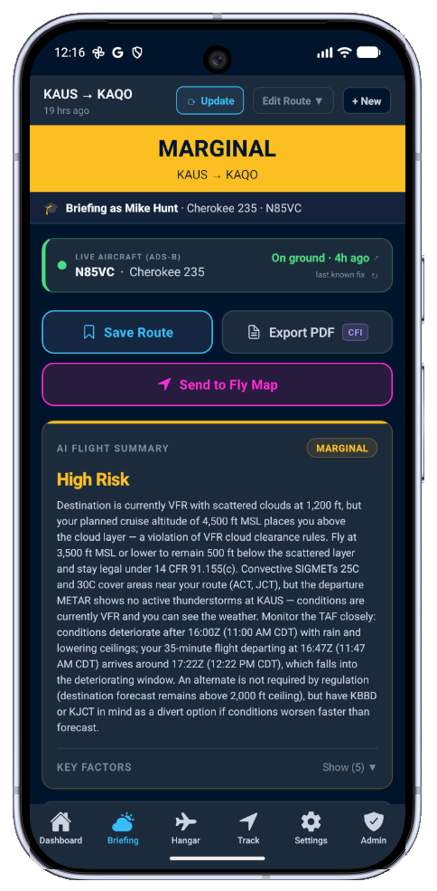
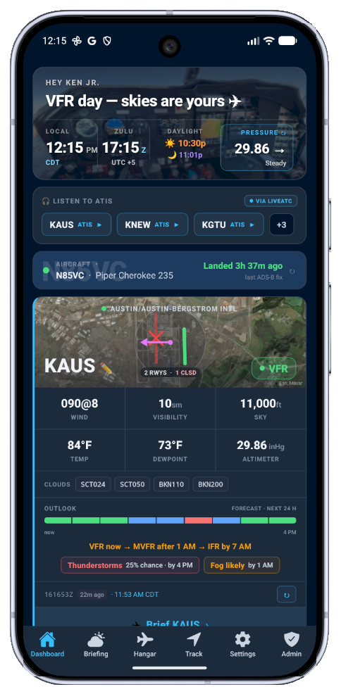
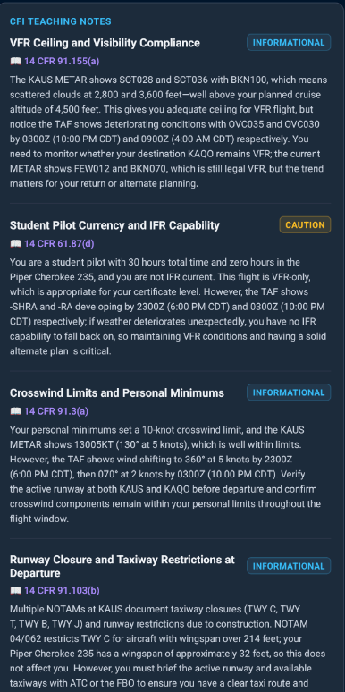
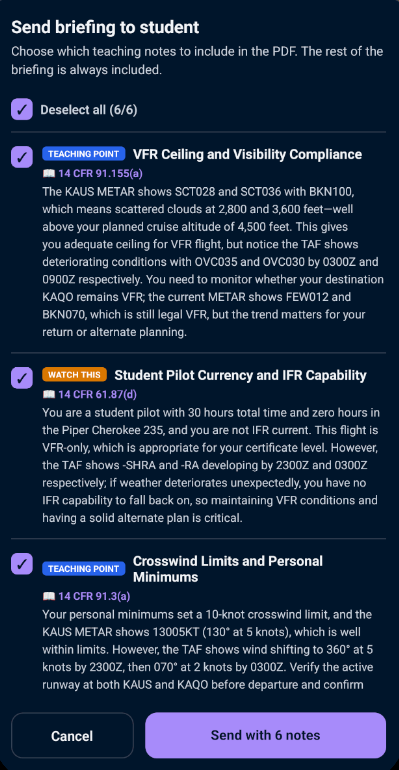
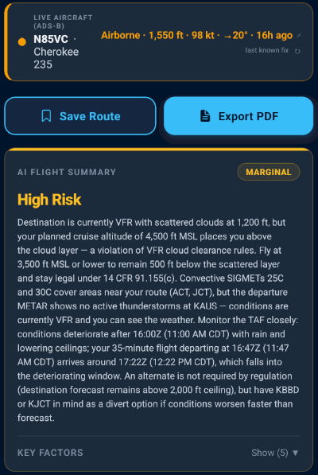
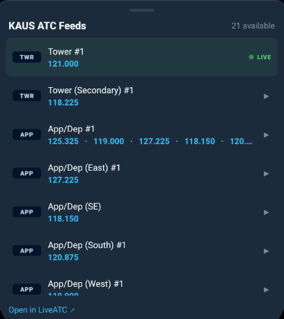
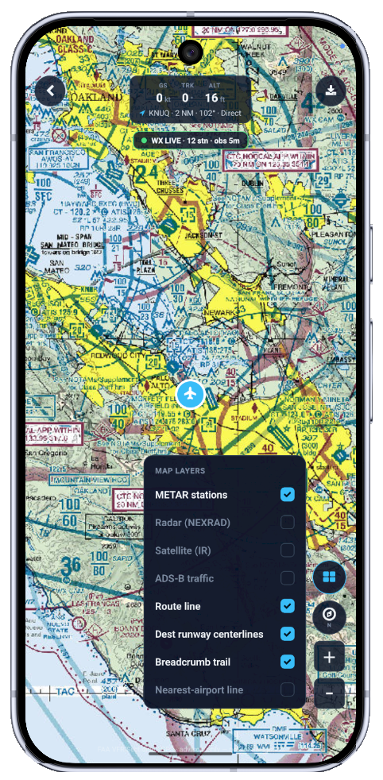
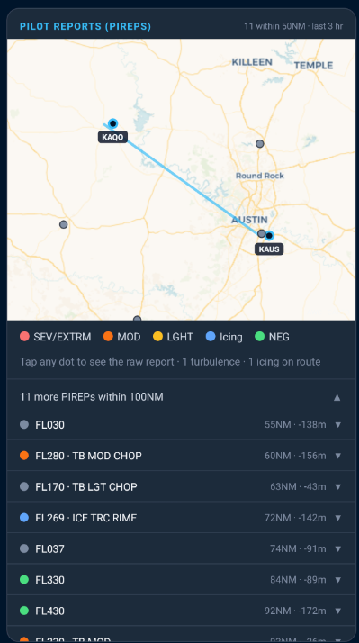
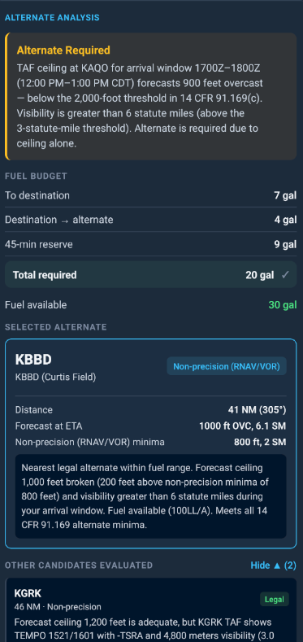

Brief in PilotBriefAI
Claude synthesizes live weather into a go/no-go judged against your personal minimums and aircraft.
AI aviation weather briefing app
ForeFlight and Garmin Pilot are built for charts, plates, filing, and navigation. PilotBriefAI is built for the preflight decision before that: Claude reads live aviation weather, METARs, TAFs, PIREPs, NOTAMs, winds aloft, and airport conditions, checks them against your personal minimums and aircraft, then gives you a plain-English Go / Marginal / No-Go briefing.
AI pilot weather briefings, route PIREPs, live ATC audio, live ADS-B tracking, and FLY sectional GPS in one app. Fully featured for 14 days, no credit card.


Pilot weather dashboard
PilotBriefAI opens on the airport picture that matters most: your watched field, favorite ATIS frequencies, live METAR category, runway wind, ceiling, visibility, sunset/night timing, nearby advisories, and one-tap access to the full AI flight briefing.
Jump straight to KAUS, KNEW, KGTU, or any saved airport without hunting through menus.
Flight category, wind, visibility, ceiling, runway wind, density altitude, and advisories stay visible in one scan.
Tap the airport card to move from dashboard awareness into the Claude-powered Go / Marginal / No-Go briefing.
Works with what you already fly
ForeFlight and Garmin Pilot are brilliant at charts, plates, filing, and navigation. None of them give you an AI aviation weather briefing, in plain English and judged against your personal minimums, that explains whether today is a go. That's the gap PilotBriefAI fills.
Claude synthesizes live weather into a go/no-go judged against your personal minimums and aircraft.
METAR/TAF, crosswind, density altitude, route hazards, winds aloft, ATC audio, and traffic context stay close at hand.
Take the decision to ForeFlight or Garmin Pilot for charts, plates, filing, and georeferenced navigation.
Your EFB shows you the weather. PilotBriefAI tells you what it means for you, then gets out of the way so you can fly.
| Capability | Raw weather sites | EFBs like ForeFlight / Garmin Pilot | PilotBriefAI |
|---|---|---|---|
| Live METAR / TAF / NOTAM data | Yes | Yes | Yes |
| Charts, plates, and filing | No | Yes | No, by design |
| Georeferenced VFR sectional GPS navigation | No | Yes | Yes |
| AI pilot weather briefing with Go / Marginal / No-Go judged against your personal minimums | No | No | Yes |
| Plain-English PAVE risk synthesis | No | No | Yes |
| Route PIREPs mapped and interpreted by AI | No | Partial | Yes |
| Live ATC audio in the briefing flow | No | No | Yes |
| FLY sectional map with GPS, METARs, weather layers, and ADS-B traffic | No | Partial | Yes |
| Role in your workflow | Source data | File and fly | Brief, decide, then use your EFB |
Complete preflight briefing
PilotBriefAI pulls from 8+ live FAA/NOAA sources. Most sections show raw data exactly as received. The AI sections are where Claude reads everything together and writes the judgment.
Claude reads every source together and writes the sections that require judgment — a verdict checked against your specific certificate, minimums, and aircraft, not a summary of decoded strings.
Live FAA/NOAA feeds displayed exactly as received with color-coded flight categories and your aircraft limits applied.
Live ATC audio, ADS-B traffic, and VFR sectional GPS context built into the briefing flow — not separate apps you have to juggle at the ramp.
Raw weather tools show conditions. PilotBriefAI checks those conditions against your personal minimums, certificate level, aircraft profile, and route context, then explains the risk in pilot language.
Conditions are inside your minimums, with no major route blockers identified.
Flyable only with mitigation, alternates, and careful verification against official sources.
Conditions or hazards exceed your profile, aircraft, or route risk limits.
Decision-focused planning
From VFR go/no-go decisions to IFR alternate planning to CFI teaching moments, the app is organized around the decisions that actually matter before flight.
Departure, destination, and alternate weather analyzed in one briefing so you know your outs before you go.
For serious GA pilots who need more than legal minimums and a wall of decoded weather strings.
Manage students, aircraft, teaching notes, and shared briefing records from one instructor workflow.
For flight instructors
A dedicated CFI workflow built into the app — student profiles, fleet management, AI teaching notes, and live ADS-B monitoring in one place.
Certificate level, currency, personal minimums, and training focus kept separate for every student.
Aircraft profiles by tail, type, crosswind limit, and equipment — so every briefing uses the right airplane.
Claude surfaces FAR/AIM-cited teaching points with space for your own CFI notes, shareable by email or text.
Send the briefing, then follow the student on live ADS-B as they fly.


Three tools. One app. No one else has all three.
Plenty of apps do one of these. PilotBriefAI puts an AI aviation weather briefer, real-time tower/ground/CTAF audio, and live aircraft tracking on a VFR sectional in one cockpit-grade workflow.
Claude turns live FAA/NOAA data into a Go / Marginal / No-Go judged against your minimums, not a wall of decoded strings.

Stream tower, ground, and CTAF from LiveATC.net in the briefing flow so you hear the field before you key the mic.

Use FLY as a VFR sectional map with GPS positioning, METAR stations, weather overlays, ADS-B traffic, route lines, and more.

PIREPs along your route
Most weather apps dump every PIREP filed in a 200-mile radius into a list and let you sort it out. PilotBriefAI does something different: it maps only the reports that fall near your actual flight corridor — then lets you tap any dot to read the raw report, or ask Claude to explain what it means for your route, your altitude, and your aircraft right now.
Turbulence at FL170 fifty miles north of your corridor at the wrong altitude isn't your problem. The MOD icing report 12 miles west at your cruise altitude absolutely is. We show you the difference.


IFR alternate intelligence
PilotBriefAI does more than flag the 1-2-3 rule. It evaluates forecast ceiling and visibility, fuel budget, distance, approach type, and alternate minimums, then explains why the selected airport is or is not a practical out.
Alternate requirements are checked against forecast arrival windows, non-precision minima, visibility thresholds, and fuel available.
Claude compares candidates so pilots see the nearest legal option, the weather risk, and the reason behind the recommendation.
Powered by Claude
Claude reads live FAA, NOAA, and aviationweather.gov data fetched server-side, including PIREPs along your route, then cross-references that data against your personal minimums and aircraft profile.
METARs, TAFs, NOTAMs, SIGMETs, AIRMETs, TFRs, route PIREPs, and winds aloft.
Certificate level, ceiling, visibility, wind, icing preferences, aircraft crosswind limit, and route plan.
A plain-English Pilot, Aircraft, enVironment, and External pressures analysis with a Go / Marginal / No-Go result.
Claude weighs ceiling, visibility, wind, crosswind, icing, and density altitude against your minimums and aircraft.
SIGMETs, AIRMETs, TFRs, and PIREPs are checked against your route, not a giant region.
NOTAMs are paginated from FAA sources and classified before Claude summarizes them.
The go/no-go path is designed with salvage-and-retry behavior for safety-critical output.
Why PilotBriefAI is different
Every briefing is judged against your certificate level, preferences, weather limits, and aircraft profile.
Use PilotBriefAI before your EFB: interpret the weather, decide Go / Marginal / No-Go, then file and navigate in ForeFlight or Garmin Pilot.
AI weather synthesis, route PIREPs, live ATC audio, and live ADS-B on sectionals in a single app.
A situational-awareness aid that makes you sharper. The go/no-go is always yours.
Simple pricing
The website does not sell subscriptions directly. Download PilotBriefAI, activate the 14-day trial in the app, then choose a plan through the App Store or Google Play when you are ready.
3 briefings total. No credit card.
$3.33/mo · billed annually
$5.00/mo · billed annually
$10.00/mo · billed annually
| Feature | Free | VFR | IFR | CFI |
|---|---|---|---|---|
| Core | ||||
| Live METAR and Go/No-Go analysis | Yes | Yes | Yes | Yes |
| Personal minimums profile | Yes | Yes | Yes | Yes |
| Animated weather maps powered by Windy | Yes | Yes | Yes | Yes |
| Briefings included | 3 total | 30/mo | Unlimited | Unlimited |
| Saved routes | 0 | 10 | Unlimited | Unlimited |
| Favorite airports | 3 | 10 | Unlimited | Unlimited |
| Aircraft profiles | 1 | 3 | Unlimited | Unlimited |
| VFR Planning and Safety Suite | ||||
| AI multi-airport route briefing | - | Yes | Yes | Yes |
| Crosswind component analysis | - | Yes | Yes | Yes |
| Density altitude and performance | - | Yes | Yes | Yes |
| IMSAFE personal check | - | Yes | Yes | Yes |
| AI route hazard analysis | - | Yes | Yes | Yes |
| Fuel and FBO availability on route | - | Yes | Yes | Yes |
| Live ATC audio | - | Yes | Yes | Yes |
| IFR Planning Suite | ||||
| AI Alternate Advisor with fuel budget and minima analysis | - | - | Yes | Yes |
| AI winds aloft and altitude advisor | - | - | Yes | Yes |
| Hourly NBM point forecast | - | - | Yes | Yes |
| AI terrain awareness | - | - | Yes | Yes |
| CFI Instructor Toolkit | ||||
| AI teaching callouts with FAR/AIM citations | - | - | - | Yes |
| Student profiles | - | - | - | Up to 5 |
| Fleet aircraft management | - | - | - | Yes |
| Email/text briefing share with CFI notes | - | - | - | Yes |
| FLY map and live ADS-B student flight watch | - | - | - | Yes |
| Briefing PDF export and share | - | - | - | Yes |
| Early access and priority support | - | - | - | Yes |
Pilot objections, answered
Yes, and keep them. PilotBriefAI does not replace charts, plates, or filing, but FLY mode now includes georeferenced VFR sectional GPS navigation. Use PilotBriefAI to brief, decide, monitor, and navigate with FLY, then use your EFB where you still need filing, plates, and full chart workflows.
Weather apps and EFBs show conditions. PilotBriefAI uses Claude to interpret those conditions against your personal minimums and aircraft, then adds route PIREPs, live ATC audio, and live ADS-B tracking.
Use PilotBriefAI before you open the filing workflow: brief the route, review AI-interpreted hazards and PIREPs, decide Go / Marginal / No-Go, then take that decision into ForeFlight or Garmin Pilot for charts, filing, plates, and navigation.
Anthropic's Claude. It reads live FAA/NOAA data server-side and produces the plain-English PAVE analysis and Go / Marginal / No-Go result.
No. It is a situational-awareness aid. Always get an official briefing from an FAA-approved source such as 1800wxbrief.com. The go/no-go decision is always yours as PIC.
14 days of full IFR-tier access, no credit card, one per pilot.
Safety first
PilotBriefAI is a situational-awareness aid, NOT a certified weather or flight-planning service. It does not replace an official preflight briefing from an FAA-approved source such as 1800wxbrief.com or Flight Service, and must never be used as your sole source of weather, NOTAM, or flight-planning information. PilotBriefAI does not make the go/no-go decision — it surfaces how live data compares to your personal minimums, in plain English. Every decision, and the safe conduct of the flight, remains solely yours as pilot in command. Weather, NOTAM, TFR, PIREP, and winds-aloft data may be delayed, incomplete, unavailable, or inaccurate, and AI summaries can contain errors. Always verify all safety-critical information against official primary sources before flight, as required by 14 CFR 91.103. You assume all risk of using this app.